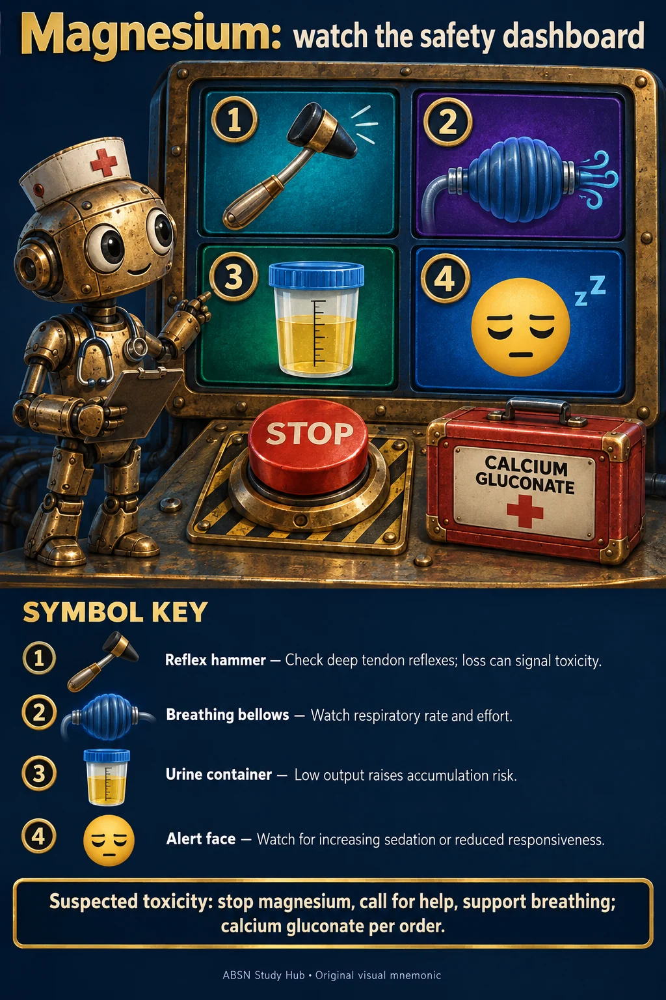

NUR 234 · MODULE 9
Magnesium: watch the safety dashboard
Look at the objects. Name what each represents. Then try the recall question.


📖 Read the symbol key
- Reflex hammer
Check deep tendon reflexes; loss can signal toxicity.
- Breathing bellows
Watch respiratory rate and effort.
- Urine container
Low output raises accumulation risk.
- Alert face
Watch for increasing sedation or reduced responsiveness.
One thing to keep
Suspected toxicity: stop magnesium, call for help, support breathing; calcium gluconate per order.
🧠 Try it from memory
Why does falling urine output matter during magnesium therapy?
Reveal the answer
Magnesium is cleared by the kidneys. Reduced output can increase toxicity risk; promptly report and follow hold parameters.
Course connection and sources
NUR 234 · Module 9 — find “Monitoring magnesium”.
A compact bedside dashboard makes the essential toxicity checks easy to recall.
Live course page reviewed 11 October 2026. Mnemonics condense the concept; continue to use the full assigned text, clinical orders and course-specific conventions. Pictures use metaphors and are not diagnostic images.